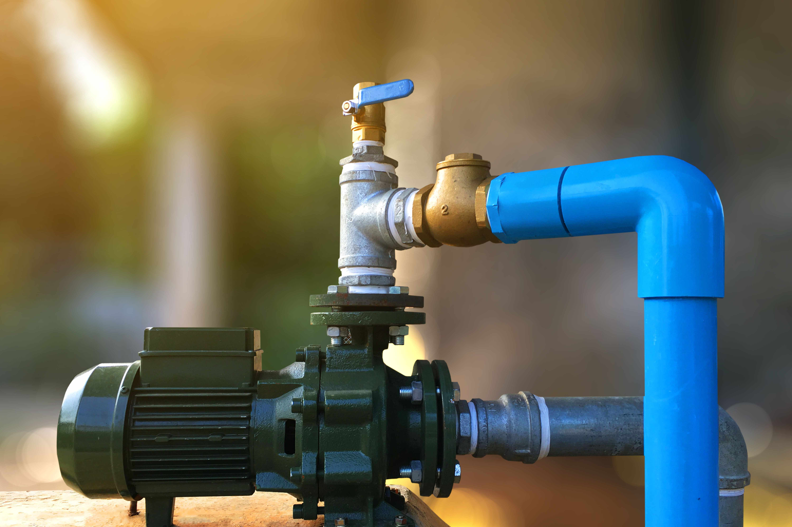
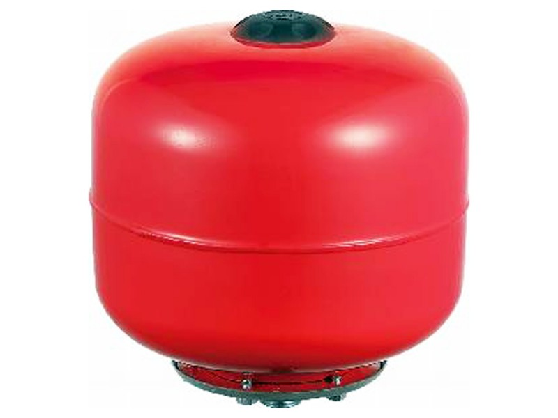
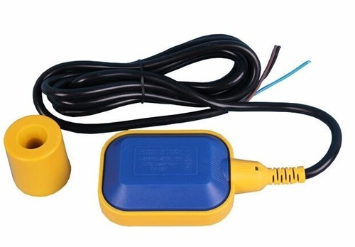
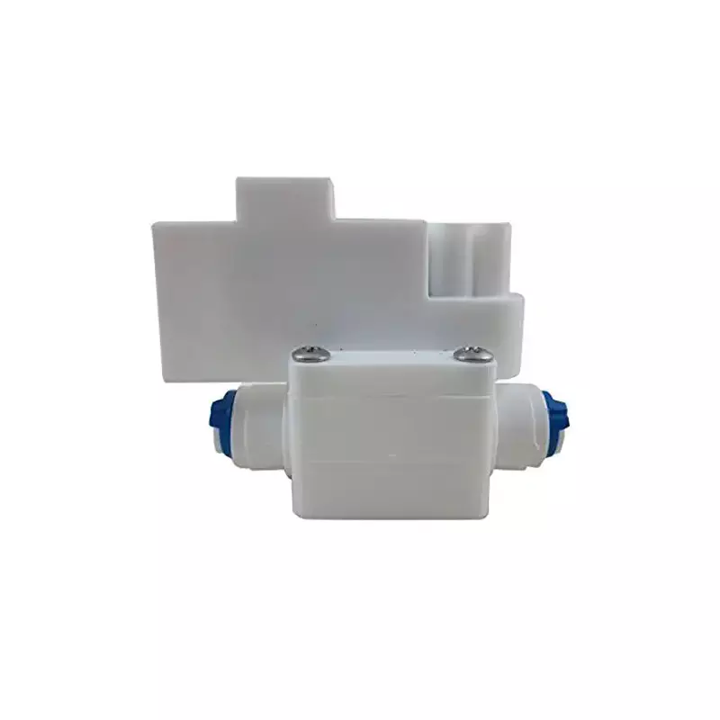
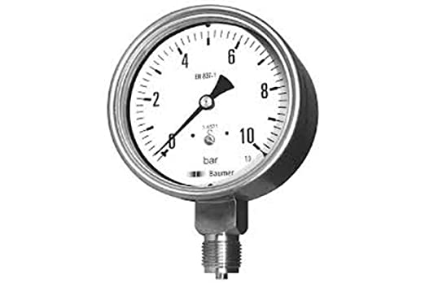
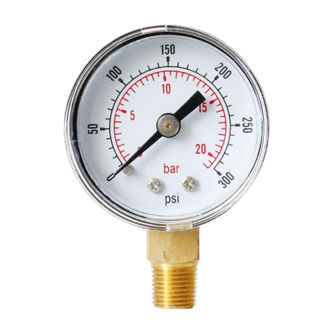
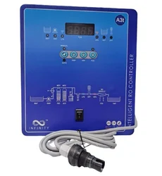
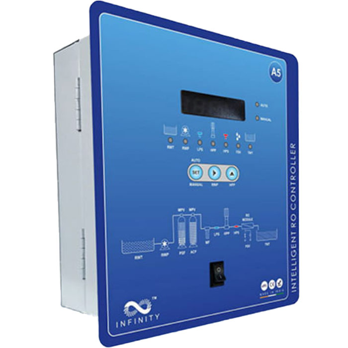
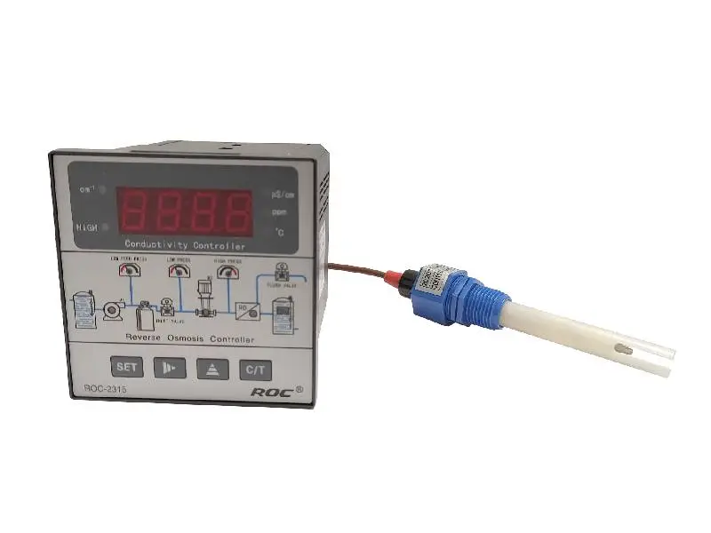

Water Pumps
Reliable and efficient water pumping solutions for every application.
Booster Pumps

Self-priming close-coupled centrifugal pumps designed to remain primed even with water-dissolved gases. The extensive use of pressed stainless steel ensures a high-performance, durable, and lightweight pump suitable for drinking water.
Pump Features
- Quiet operation due to the anti-vibration system between shaft and impeller.
- More efficient motor with low energy consumption.
- Special paint for improved resistance against environmental corrosion.
- Application areas include: Water treatment systems, HVAC systems, industrial boosting, and water supply systems.
Motor Features
- Close-coupled to a TEFC brushless induction motor designed for continuous operation.
- A thermal relay is provided in the windings to protect against overload.
Circulator Pumps
Our circulator pumps are designed for circulating liquids in heating and domestic hot-water systems. They are suitable for systems with constant or variable flows where it is desirable to optimise the pump duty point and where night setback is desired.
Key Features
- Ideal for domestic heating and hot water systems.
- Energy-efficient and reliable performance.
- Suitable for systems with variable flow and temperature.
Multi-Stage Booster Pumps

Our vertical or horizontal multistage in-line centrifugal pumps are suitable for a wide range of water supply, irrigation, liquid transfer, and boosting applications. They are heavy-duty and designed for continuous duty in commercial and industrial installations.
Pump Features
- Versatile high-efficiency multistage design.
- Robust, long-life construction with stainless steel vital components.
- Certified for use in potable water, with heads up to 330 m.
- Available with Hydrovar variable speed pump controller.
Submersible Pumps
Specifically designed for water supply from boreholes, our submersible pumps can also be used in other submersible applications, either vertically or horizontally. They are robust, reliable, and built for long-term performance deep underground.
Key Features
- Designed for borehole water supply and other submersible applications.
- Can be installed in vertical or horizontal configurations.
- Corrosion-resistant materials for extended lifespan.
Pressure Tanks
Our pressure tanks have been specially designed for pressurised booster installations and are also suitable for firefighting and irrigation systems. The design incorporates a replaceable butyl rubber membrane and are important components of pressurised booster supply systems where automatic pumped water supply is provided by means of pressure switch controlled pumps. The tanks have two functions; to cushion pressure surges as the pump starts and stops and also to provide a drainage supply into the system to control pump cycling.

24 Liters

50 Liters
100 Liters
Pressure Controllers
Our pressure controller is used in the automatic operation of pressurised water systems. it's main features include starting the pump on pressure (fixed at 1.5 Bar) and stops on low flow.Provides dry run protection. Standard models require manual reset, Automatic models restart when supply returns Incorporates a spring activated hydraulic accumulator to control pump cycling LED power on, pump run and run dry indicators

Float Switch

Brio Pump Controller

1.1kW Press Controller
Pressure Switches
Our pressure switches offer a wide setting range, are shock and impact resistant, aer snap action electrical contacts minimize chatter, bounce, and wear, and ensure long term electrical and mechanical reliability. Also have small dimensions - space saving and easy to install in panels. Electrical connection from front of the unit makes rack mounting easier and also saves space. Suitable for alternating current and direct current. Single pressure switches and thermostats are fitted with a single pole double throw contact system .

0.6 - 14 bar

Domestic High Pressure Switch
Domestic Low Pressure Switch
Pressure Gauges
Designed for both gas and liquid media, our pressure gauges provide accurate readings for pressures within the range of 0 to 30 bar, ensuring you can monitor your system's performance effectively.

10 Bar

20 Bar

30 Bar
Reverse Osmosis Control Panels
Main features auto & manual facility inbuilt, complete RO logic pre program, automatic flushing facility inbuilt, mimic diagram with 9 LEDs for plants status, push & pull type heavy duty terminals for easy wiring, high pressure & low pressure tripping facilities inbuilt, RWT & TWT low & high Level tripping facilities inbuilt, alphabetical rod 7 segment display for online tds.

250 - 500 LPH Panel

1000 - 2000 LPH Panel

RO Controller (ROC) 2315